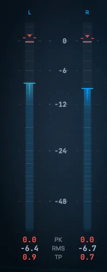
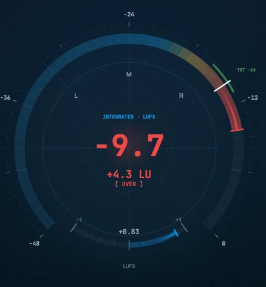
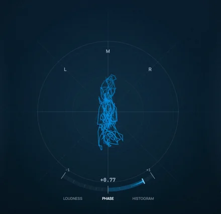
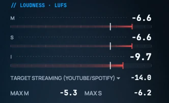
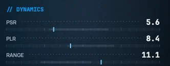
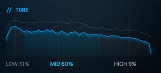
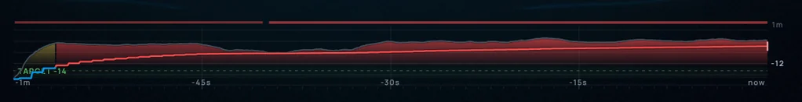
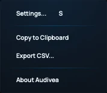
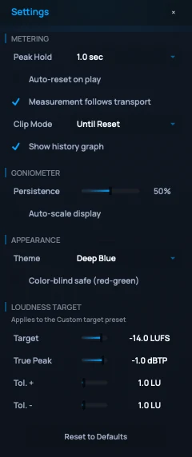

Overview
Arcoline is a precision monitoring instrument for music producers, mix engineers and mastering engineers. It reads loudness, true peak, level, dynamics, stereo image and tonal balance from your program material in real time — and it does it without touching your audio. Arcoline is an analyser: signal passes through it completely unaltered.
The design has one idea at its core: a two-view cognitive split.
- Dive — a detailed workbench for when you're diagnosing. Every reading, on one screen.
- Ascend — an at-a-glance verdict for when you're creating. One dominant number that tells you if you're safe.
Switch between them freely with the pill in the control bar, the Tab key, or A / D — both read the same measurement, at different densities.
Install & setup
Arcoline ships as a VST3 and AU plugin plus a standalone app, for macOS (universal — Intel and Apple Silicon) and Windows.
Installing
Run the installer for your platform — a .pkg on macOS, an .exe on Windows. It places the plugin in the standard folders automatically:
| Platform | Format | Location |
|---|---|---|
| macOS | AU | /Library/Audio/Plug-Ins/Components |
| macOS | VST3 | /Library/Audio/Plug-Ins/VST3 |
| Windows | VST3 | C:\Program Files\Common Files\VST3 |
After installing, rescan plugins in your DAW (most hosts do this automatically on next launch). On macOS, the first scan may take a moment while the system validates the component.
Where to insert it
Arcoline is a meter, so put it where you want to measure:
- On the master / mix bus, last in the chain (after your limiter) to read the loudness and true peak your listeners will actually get. This is the delivery check.
- On any individual track or bus to inspect its level, dynamics or stereo image in isolation.
- Standalone for live monitoring, broadcast, or checking audio outside a DAW. In the standalone app, choose your input device from the
⋮menu → Audio/MIDI Settings.
Quick start
- Insert Arcoline on your master bus, after the limiter.
- Open it. Pick your delivery target from the TARGET row (e.g. Streaming −14 LUFS). See Loudness targets.
- Press play and let the whole song run once. The Integrated LUFS reading builds over the full program.
- Read the verdict: the big number against your target, the ±LU delta chip, and the true-peak "over" flag.
- Press R to reset the measurement before the next pass.
That's the loop. Everything below is detail on what each reading means and how to bend Arcoline to your workflow.
Loudness targets
A target sets the loudness and true-peak ceiling Arcoline judges you against — it drives the delta chip, the zone colours and the true-peak "over" flag in both views. Click the TARGET row in either view to choose one.
| Preset | Target | True peak | For |
|---|---|---|---|
| Streaming (YouTube / Spotify) | −14 LUFS | −1.0 dBTP | Spotify, YouTube, Tidal |
| Apple Music | −16 LUFS | −1.0 dBTP | Apple Music / iTunes |
| Amazon Music | −14 LUFS | −2.0 dBTP | Amazon Music |
| Podcast | −16 LUFS | −1.0 dBTP | Spoken-word content |
| Broadcast (EBU R128) | −23 LUFS | −1.0 dBTP | European broadcast |
| Film (ATSC A/85) | −24 LUFS | −2.0 dBTP | US broadcast & streaming video |
| CD / Vinyl Master | −9 LUFS | −0.3 dBTP | Physical media (plays as mastered) |
| Custom | Your own values | Anything else | |
Most streaming platforms normalize playback: they turn everyone down to a reference loudness. For those presets, Ascend shows a plain-language line telling you how much quieter or louder your master will play after normalization. The CD / Vinyl Master preset is different — it plays as mastered, so no normalization preview is shown.
Dive mode — the full workbench
Dive is where you go when you're diagnosing a problem or doing a mastering QC pass: every reading Arcoline takes, on one screen.

Reading the meters in Dive
A reference for every measurement Dive shows, laid out left-to-right as it sits in the window: the level meters, the centre instrument, the report card, then the history along the foot.
Level meters — Peak, RMS & True Peak

Down the left edge, the left/right meters show classic per-channel level in dBFS: RMS (average energy) as the filled bar, with a peak-hold line marking the highest recent sample peak. The foot of each channel prints the session maxima — PK (peak), RMS, and TP (true peak, the inter-sample level that predicts codec or DAC clipping). A clip indicator flags full-scale samples; its behaviour is set by Clip Mode in Settings.
The centre instrument — LUFS dial & Phase scope
The centre has two postures. The LUFS dial is a 270° radial for Integrated loudness — the dominant hero number, a ±LU delta against target, and a TGT marker on the arc. Toggle it to the Phase scope, a full goniometer for stereo imaging:


The goniometer plots left against right as a Lissajous figure — a vertical trace is mono, a 45° lean shows a channel imbalance, a round blob is a wide image. The arc beneath it reads phase correlation on a named-end scale: MONO (+1) identical / mono-compatible, 0 uncorrelated / wide, ANTI (−1) out of phase — investigate anything that sits there. Tune the trail with Persistence, or enable Auto-scale to fill the scope with low-level detail (see Settings).
The report card — Loudness (M / S / I)

The right-hand report card opens with loudness, measured to ITU-R BS.1770-4 with K-weighting, in three windows:
- Momentary (M) — a 400 ms window; "how loud right now."
- Short-term (S) — a 3 second window; the current section.
- Integrated (I) — the gated average over the whole program; the value the centre dial mirrors, and the number streaming platforms normalize to.
Integrated loudness uses gating to ignore silence and quiet passages (an absolute gate at −70 LUFS and a relative gate 10 LU below the running mean), so it only means something once a reasonable stretch of program has played — let the whole song run. Max M and Max S hold the loudest momentary and short-term readings of the session.
The report card — Dynamics (PSR / PLR / Range)

| Metric | Meaning |
|---|---|
| PSR | Peak to Short-term loudness Ratio — the punch of the current moment. Higher = more dynamic; low = squashed. |
| PLR | Peak to Loudness Ratio (max true peak minus Integrated) — the crest of the whole program. |
| Range | Loudness Range (LRA) — the spread of short-term loudness. Low = consistent; high = wide contrast. |
The report card — Tonal balance (TONE)

Tonal balance shows the program's spectrum and splits its energy across low, mid and high bands as a percentage of the whole, integrated over the session. It's the long-window read that catches a bass-heavy mix, a brittle top end, or a master that translates darker than you intended.
Loudness history

Along the foot of Dive, a scrolling timeline plots loudness against your target line — the fastest way to see where in the song you drift over. Toggle it with H or Show history graph in Settings (Dive only). Its green/amber/red story is covered under The colour language.
Ascend mode — the verdict
Ascend rearranges the same measurement into a single report card, built to be glanced at while you create.

It surfaces the delivery-critical readings, sized by importance — Dive covers each in full:
- Integrated LUFS (the hero number) — the gated average loudness over the whole program, the value streaming platforms normalize to. The bold ±LU delta is how far you sit from target: the "am I safe?" answer.
- Momentary & Short-term rails — loudness over a 400 ms and a 3 second window; a subordinate read of the current moment and section.
- The TARGET row — clickable; sets what the delta judges against (see Loudness targets).
- The normalization line — a plain-language "plays X dB quieter / louder on target" for platforms that turn playback down to a reference loudness.
- TRUE PEAK — the inter-sample peak in dBTP, measured with BS.1770-4 oversampling and almost always higher than your DAW's sample peak; the sticky "over" flag latches for the whole session so a stray transient can't slip past. (See True peak vs sample peak.)
- STEREO — correlation (MONO +1 → ANTI −1) and left/right balance; a fast phase-safety check.
Ascend intentionally hides what you don't glance at mid-create: there's no goniometer, no clip badge and no history graph — switch to Dive when you need them.
Reset, Freeze, Export
All three live in the control bar at the top of the window.
Reset
Reset clears the measurement session — Integrated loudness, max-holds, the history graph, clip counts and the true-peak "over" flag — so your next pass starts clean. Click RESET or press R / Cmd+R (Ctrl+R on Windows) — it clears immediately.
Freeze
FREEZE (or F) holds the display so you can read or screenshot a moment without the meters moving on. Measurement continues underneath; unfreeze to catch up.
Export

From the ⋮ menu, export a snapshot of every current reading — Copy to Clipboard (a formatted text report) or Export CSV (a spreadsheet-ready file).
Both include the active preset, LUFS (Integrated / Short-term / Momentary and Max M / Max S), true peak, the dynamics trio (PSR / PLR / Range), the tonal balance, per-channel peak & RMS, correlation, and clip counts — the same numbers on screen, ready for a delivery sheet.
Settings reference

Open Settings from the ⋮ menu or with S; close with Esc. It slides in from the right, mirroring the panel's groups — Metering, Goniometer, Appearance (theme & accessibility) and Loudness Target — with Reset to Defaults at the foot (two clicks to confirm). Controls that don't apply to the current view are greyed out.
Metering
| Setting | Options | Default |
|---|---|---|
| Peak Hold | 0.5 / 1.0 / 2.0 / 3.0 sec, or Infinite | 1.0 sec |
| Clip Mode | Until Reset (latches) / Timed (2s) / Off | Until Reset |
| Auto-reset on play | On / Off | Off |
| Measurement follows transport | On / Off | On |
| Show history graph (Dive only) | On / Off | On |
Goniometer (Dive only)
| Setting | Options | Default |
|---|---|---|
| Persistence | 0% (instant) to 100% (long trail) | 50% |
| Auto-scale display | On / Off — boosts low-level stereo detail to fill the scope | Off |
Themes
Three themes ship in Appearance: Deep Blue (the default, shown throughout this manual), a greyer Neutral Dark, and a positive-polarity Light theme for bright rooms.


Colour-blind safe
An accessibility overlay (in Appearance, off by default) that re-points the alert ramp to a red-green-safe set — over-target reds render as magenta — on top of whichever theme you use.
Loudness Target
These take effect only when the Custom preset is active (see Loudness targets) — the asymmetric "too loud" / "too quiet" margins colour the delta chip.
| Setting | Range | Default |
|---|---|---|
| Target | −60 to 0 LUFS | −14 LUFS |
| True Peak | −6 to 0 dBTP | −1.0 dBTP |
| Tolerance + | 0.5 to 6 LU | 1.0 LU |
| Tolerance − | 0.5 to 6 LU | 1.0 LU |
Measurement & transport
How the measurement accumulates is the key to accurate readings. Arcoline separates two kinds of measurement:
- Instantaneous meters — peak, RMS, Momentary & Short-term LUFS, live true peak, and correlation. These are always live whenever signal is present.
- The measurement session — Integrated LUFS, Loudness Range, the history graph, the sticky max-holds (Max M / Max S / max true peak) and the true-peak "over" flag. These accumulate over a run.
By default (Measurement follows transport is on) the session is linked to your host's transport: it accumulates while the transport rolls and pauses when you park it. This keeps the session honest — a monitoring peak you audition while stopped (talkback, solo, scrubbing) won't contaminate your delivery reading or falsely trip the true-peak "over" flag.
For live or broadcast work, turn Measurement follows transport off to measure continuously whenever signal is present — the right choice for live use, broadcast, or the standalone app. (With no host playhead there's nothing to follow, so it's always continuous.)
Two related behaviours:
- Offline bounce / render always accumulates the full session, even in hosts that report the transport as stopped during a non-real-time render. A bounce is treated as a deliberate full-signal measurement.
- Auto-reset on play (optional) clears the session automatically each time playback starts, so every pass measures fresh.
The colour language
Colour in Arcoline is disciplined: on the loudness axis the three colours have distinct, non-overlapping jobs, and colour is never the only signal — it's always paired with a number or a word:
- Red — it happened. Integrated loudness is over the line, or true peak crossed the ceiling. A committed problem in what you've measured.
- Amber — it's happening. Short-term loudness is above target while Integrated is still in band — the current section is dragging you over. A trend, not yet a verdict.
- Green — on target. You're inside the target's tolerance band. Calm.
On the level meters and true-peak readout, amber keeps its plain meaning: approaching the ceiling.
Keyboard shortcuts
| Key | Action |
|---|---|
| R / Cmd+R | Reset the measurement session |
| F | Freeze / unfreeze the display |
| A | Switch to Ascend |
| D | Switch to Dive |
| Tab | Toggle between views |
| H | Show / hide the history graph (Dive) |
| S | Open / close Settings |
| Esc | Close Settings |
On Windows, use Ctrl+R for reset.
Troubleshooting & FAQ
Does Arcoline change my audio?
No. It's a pure analyser — signal passes through completely unaltered. You can leave it on the master bus with confidence.
Where should I insert it for a delivery check?
On the master bus, last in the chain, after your final limiter. Anything downstream of the meter isn't measured.
My Integrated LUFS shows "––" or isn't moving. Why?
Integrated loudness is part of the measurement session, which by default is linked to the transport — press play. It also needs signal above the −70 LUFS gate and a stretch of program to settle. Press R to start a fresh measurement.
Did my offline bounce get measured?
Yes. Offline / non-real-time renders always accumulate the full session, even in hosts that report the transport as stopped during a bounce.
The true-peak "over" flag didn't trip while I was auditioning paused. Is that a bug?
No — that's by design. The sticky "over" flag follows the measurement session and freezes when the transport is parked, so a monitoring peak you hear while stopped can't falsely flag your delivery. The live true-peak readout keeps updating either way.
My master peaks at −1.0 dBFS but Arcoline shows a true-peak over. How?
True peak measures inter-sample peaks — the level between samples after reconstruction — which routinely sits above the sample-peak value your DAW shows. That's exactly the gap true-peak metering exists to catch.
Can I measure continuously for live or broadcast?
Yes — turn off Measurement follows transport in Settings, or use the standalone app, and the session runs whenever signal is present.
How do I try metering before I install anything?
Use the free browser-based Mix Analyzer — it measures loudness, true peak, dynamics, stereo image and tonal balance from an audio file, no install required.
Head back to Support or get in touch — we read every message.